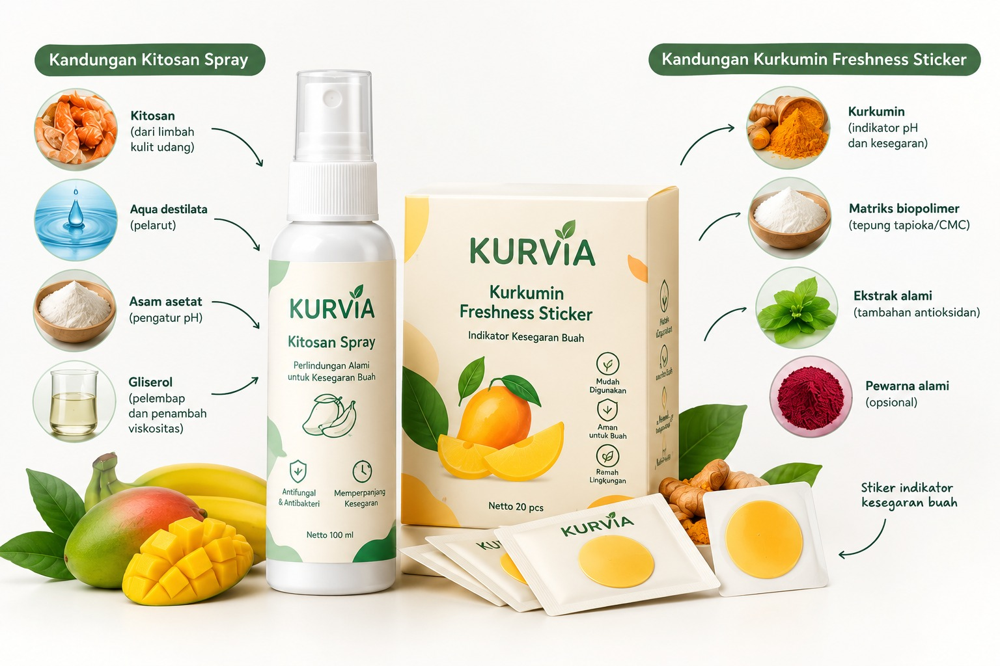

KURVIA: Smart Kitosan Spray dan Kurkumin Freshness Sticker
Mengintegrasikan kontrol respirasi buah dengan formulasi kitosan presisi dan analisis spektrum warna stiker indikator kurkumin berbasis platform monitoring untuk preservasi buah klimaterik dan pencegahan food waste berlandaskan antitabzir.

Proses Pembuatan KURVIA

Live FreshCheck AI Analyzer
Fitur kalibrasi warna indikator stiker kurkumin secara *real-time*. Ekstraksi parameter RGB/Hue/LAB akan dicocokkan dengan model AI untuk mengklasifikasikan kesegaran (FRESH / CHECK / LESS FRESH).
Arahkan kotak fokus pada stiker indikator kemasan. Hindari bayangan gelap.
Status Kesegaran (AI)
Mencari Objek...
Zona Spektrum Indikator Kurkumin — 3 Tahap
Representasi ilmiah perubahan warna stiker indikator kurkumin berdasarkan peningkatan gas etilen dan tingkat pH lingkungan sekitar buah.
Klik pada salah satu blok warna di atas untuk melihat interpretasi kimianya.
Kurkumin Relatif Stabil (Kondisi Awal)
Perubahan warna masih minimal. Kondisi lingkungan relatif asam–netral. Buah berada pada kondisi kesegaran relatif baik.
Smart Inventory (FIFO)
Sistem antrean prioritas konsumsi berdasarkan data masuk paling awal.
Tambah Stok Masuk
| Informasi Item | Masuk / Usia | Tersedia | Aksi |
|---|
Sistem Kalibrasi & Dosis Spray
Hitung kalibrasi output botol spray Anda dan estimasikan kebutuhan volume coating presisi berbasis luas permukaan buah.
1. SPRAY CALIBRATION
"Kenali 1 Semprotanmu". Lakukan tes semprot spray 10x ke wadah/timbangan untuk mengetahui output spesifik botol Anda.
2. SPRAY DOSE CALCULATOR
"Berapa kali harus disemprot?". Sistem menghitung kebutuhan volume coating.
MANGO
Berat: 500 g | Ukuran: ±10 cm | Volume/spray: 0.15 mL
Food Rescue Engine
Cegah food waste! Dapatkan rekomendasi pengolahan untuk buah dengan status LESS FRESH.
KURVIA AI
Online | Knowledge Base 25+ Masalah
Prototype: Simulated responses based on local knowledge base.
Quick Fruit Check
Pilih buah dan masukkan kondisi visual serta indikator stiker untuk mendapatkan analisis cepat kondisi buah.
*Hasil merupakan indikasi awal membantu monitoring (Prototype Decision-Support).
Fruit Profile Database
Pilih buah untuk melihat detail profil klimaterik dan panduan preservasi.
Mangga
Mangifera indicaKlimaterik Tinggi
Deskripsi buah...
Profil Etilen
Sangat responsif terhadap gas etilen. Cepat matang jika disimpan bersama buah klimaterik lainnya.
Tahap Pematangan
Storage Guide (Panduan Penyimpanan)
Observasi Visual
- Warna/Bercak: Perhatikan pangkal tangkai
- Tekstur: Cek kekenyalan daging
- Aroma: Aroma manis muncul saat matang
Panduan Freshness Sticker
Penggunaan stiker kurkumin KURVIA pada buah ini memberikan indikasi perubahan lingkungan pematangan:
KURVIA Mitra
Jaringan 20 calon mitra pedagang buah dan lokasi implementasi KURVIA.
Peta Persebaran Mitra (Prototype Location)
Direktori Mitra
Detail Mitra
Nama Toko
Alamat, Kota
Mitra telah mencoba implementasi stiker kurkumin dan spray pada komoditas utama. Menunjukkan penurunan laju pembusukan ±15% selama periode pantau awal.
KURVIA Store
Pesan perlengkapan preservasi KURVIA secara langsung.
Paket Hemat

KURVIA Starter Pack
Rp 30.000
Produk Satuan

Kitosan Spray 100 mL
Botol spray siap pakai untuk preservasi.
Rp 15.000

Kurkumin Freshness Sticker
Wadah berisi 25 lembar stiker indikator.
Rp 20.000
Ringkasan Belanja 0 Item
Keranjang masih kosong
Feedback & Evaluasi
Bantu kami mengembangkan KURVIA dengan memberikan ulasan Anda.
Contact & Support
Butuh bantuan mengenai pemesanan produk, informasi kemitraan, atau panduan penggunaan platform KURVIA?